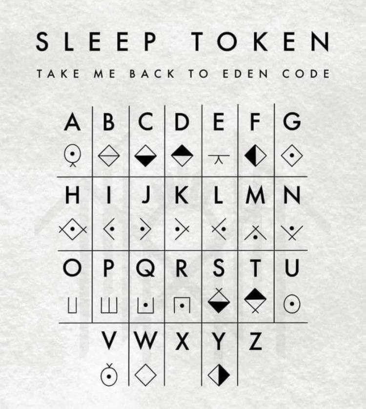
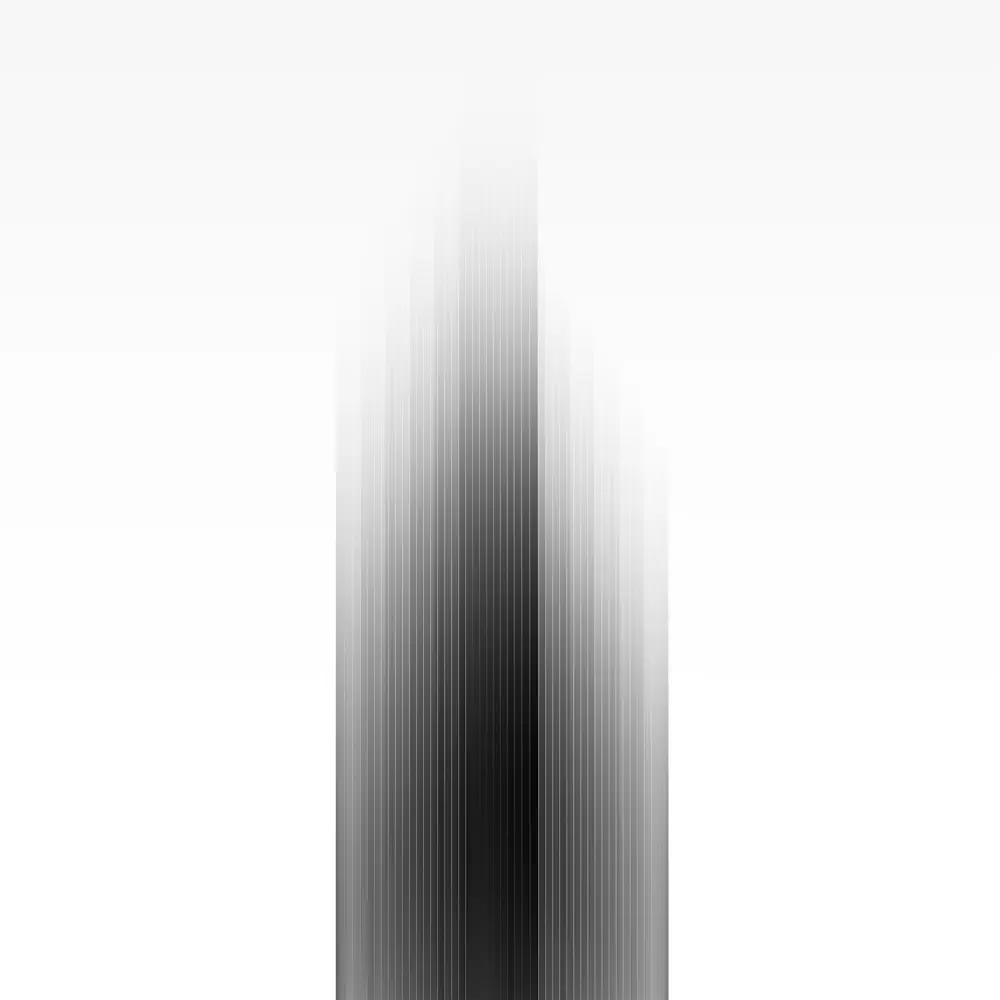
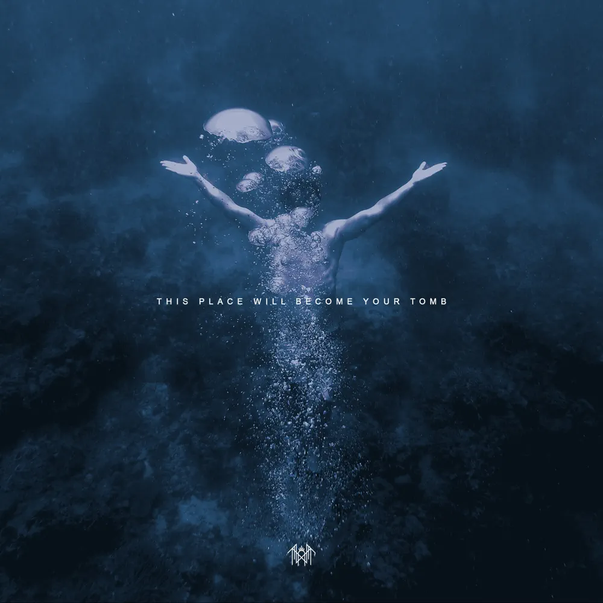
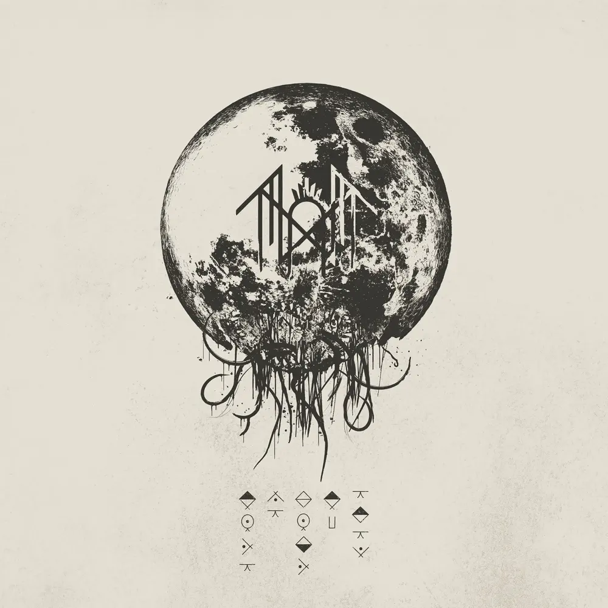
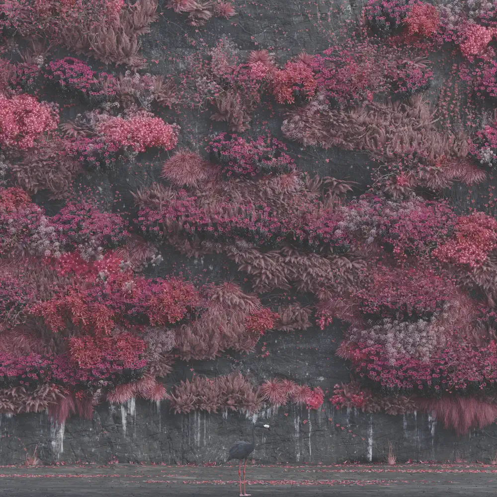

Biografia
Sleep Token é uma banda britânica composta por membros anônimos, formada em 2016 em Londres, Inglaterra. A banda aborda um estilo musical que combina elementos de multiplos estilos em uma mesma música, sendo normalmente associado ao rock alternativo, pop indie e ao metal. O grupo mantém uma atmosfera de mistério e uma apresentação performática em torno da divindade antiga "Sleep" que se tornou sua marca registrada e um grande ponto atrativo aos fãs da banda, que se envolvem na mitologia aprofundada nas músicas e nos shows.

Discografia
Sundowning
(2019)

This Place Will Become Your Tomb
(2021)

Take me Back to Eden
(2023)

Even in Arcadia
(2025)
